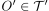
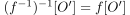
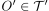
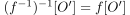
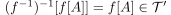
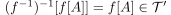

Homeomorphismus als stetig abgeschlossene/offene Bijektion
1. Satz
Seien  und
und  topologische Räume und
topologische Räume und  eine Abbildung.
Dann sind folgende Aussagen äquivalent:
eine Abbildung.
Dann sind folgende Aussagen äquivalent:
 ist ein Homeomorphismus
ist ein Homeomorphismus- ist eine bijektive, stetige, offene Abbildung
- ist eine bijektive, stetige, abgeschlossene Abbildung
2. Beweis
2.1. a)
Sei ein Homeomorphismus, so ist auch  stetig, d.h. für eine offene Menge  ist  offen
Analog als abgeschlossene Abbildung durch die Aussage über Urbilder abgeschlossene Mengen unter stetigen Abbildungen
stetig, d.h. für eine offene Menge  ist  offen
Analog als abgeschlossene Abbildung durch die Aussage über Urbilder abgeschlossene Mengen unter stetigen Abbildungen
2.2. b)
Wegen der Umkehrbarkeit bijektiver Abbildungen bleibt zu zeigen: ist stetig
Sei  , so ist .
Analog für eine abgeschlossene Abbildung
, so ist .
Analog für eine abgeschlossene Abbildung